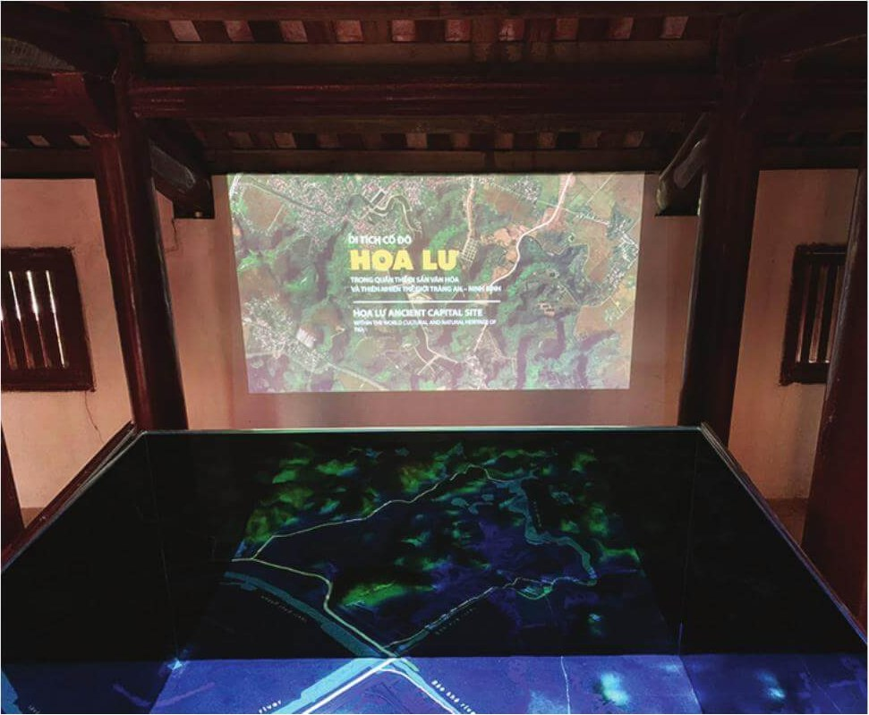

CỐ ĐÔ HOA LƯ
Exposition du patrimoine Đinh et Lê antérieurs

Mesdames et Messieurs, afin d'illustrer de manière vivante la formation et le développement éclatant de la capitale Hoa Lư, les archéologues y ont mené de vastes campagnes de fouilles en 1977. Ces recherches ont permis de mettre au jour une cour pavée de briques appartenant à un palais datant du Xe siècle, sous les dynasties Đinh et Tiền Lê.
Les résultats de ces fouilles ont permis d'établir scientifiquement que le centre de l'ancienne capitale de Hoa Lư correspondait exactement au cœur de l'actuel site historique de l'ancienne capitale Hoa Lư.
La salle d'exposition abrite aujourd'hui une riche collection d'objets originaux, accompagnés de documents scientifiques et de présentations visuelles, offrant un aperçu complet de la physionomie de la capitale Hoa Lư au Xe siècle, ainsi que des efforts de préservation et de mise en valeur du site dans la vie contemporaine.

En pénétrant dans cet espace, vous pourrez admirer des objets caractéristiques du Xe siècle tels que : des jarres, des urnes, des bols, des assiettes... et plus particulièrement la collection de monnaies « Thái Bình Hưng Bảo » et « Thiên Phúc Trấn Bảo », frappées sous les dynasties Đinh - Tiền Lê. Celles-ci témoignent non seulement de la volonté d'indépendance nationale, mais ont également contribué au développement économique du pays.
Une précieuse collection de matériaux de construction de la capitale y est également exposée, comprenant des briques portant l'inscription « Đại Việt quốc quân thành chuyên » (Brique de la citadelle militaire du Đại Việt), des briques ornées de motifs de fleurs de lotus ou d'oiseaux phénix, ainsi que divers types de tuiles tubulaires typiques de l'architecture palatiale de l'époque.
Les visiteurs peuvent également contempler le Pilier soutra bouddhique, érigé sur ordre du roi de Nam Việt, Đinh Khuông Liễn, fils aîné du roi Đinh Tiên Hoàng. Il s'agit d'un objet original, unique en son genre, présentant des caractéristiques extrêmement rares dans l'épigraphie et la sculpture sur pierre vietnamiennes. Les inscriptions gravées sur le pilier fournissent d'inestimables données historiques, reflétant profondément les aspects religieux, les relations sociales et le système d'attribution des terres sous la dynastie Đinh. Il convient de souligner que cette stèle est la plus ancienne de la période féodale autonome conservée à ce jour. En reconnaissance de ces valeurs historiques et culturelles exceptionnelles, la collection du Pilier soutra bouddhique a eu l'honneur d'être reconnue Trésor national par décision du Premier ministre en 2024.
Les objets exposés nous montrent que les motifs décoratifs sous les dynasties Đinh - Tiền Lê, bien qu'encore rustiques et simples dans leur expression, sont profondément imprégnés de l'identité culturelle nationale. Ce sont ces fondements artistiques qui ont posé les prémices du développement éclatant de la culture vietnamienne au cours des périodes historiques suivantes.